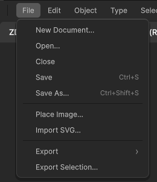
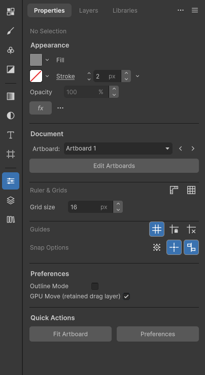
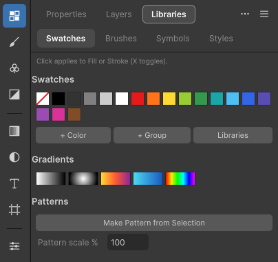
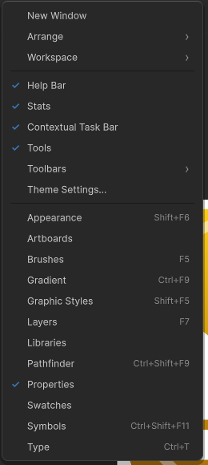
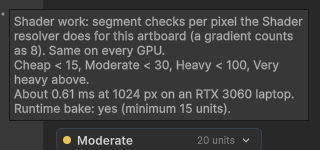
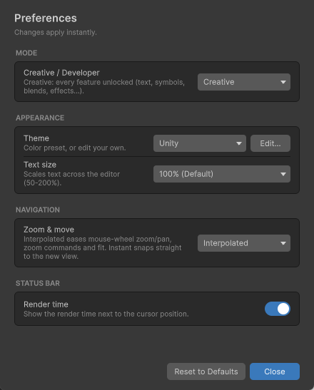

Interface
The painter window, its panels, bars and modes.
This page walks through the painter window part by part. For a first look at the whole window, see the overview.
Menu bar
File creates, opens, saves, places images, imports SVG and exports. Object holds grouping, locking, path and Pathfinder commands. Window turns panels and bars on and off.

Panels
The dock on the right has three tabs. The column of icons beside it switches to the other panels, such as Appearance, Gradient, Type and Artboards.
Properties
Shows position, size, rotation, fill, stroke, opacity and alignment of whatever is selected, plus quick actions like Group, Recolor, Offset Path and Simplify. With nothing selected it shows document settings: the active artboard, grid size, guides, snapping, and a shortcut to Preferences.

Layers
Lists layers and the shapes inside them. See Documents, Artboards and SVG.
Libraries
Four sub-tabs: Swatches (which also holds gradients and patterns), Brushes, Symbols and Styles. Click a swatch to apply it to the fill, or to the stroke when stroke is active (press X to switch).

Other panels
Open any panel from the Window menu. A panel can float over the canvas or stay docked, and Window › Workspace switches between layouts: Painting, Typography, Layout and Minimal. The shortcuts shown in the menu, such as F7 for Layers, show or hide the panel.

The Pathfinder panel combines shapes: Unite, Minus Front, Intersect and Exclude, plus Divide, Trim, Merge, compound paths, clipping masks and path clean-up. The Artboards panel manages artboards.
Bars
- Toolbar (left): the tools. See Drawing Tools.
- Contextual task bar (floating under the selection): shortcuts such as Offset Path, Simplify and Duplicate.
- Help bar (bottom): the active tool with a hint for how to use it, the zoom, the artboard switcher, the cursor position and the render time.
- Stats (bottom left): the cost meter, described below.
All of them can be hidden from the Window menu.
The cost meter (Stats)
The badge at the bottom left rates how much GPU work the active artboard needs when it is drawn by the Shader resolver (the main way Vectoria Image draws, see Choosing a resolver). The number is in units, where one unit is one outline segment checked per pixel, and a gradient counts as 8 units. The levels are Cheap (under 15), Moderate (under 30), Heavy (under 100) and Very heavy.

- Cheap and Moderate artwork is fine to repeat many times on screen.
- Heavy and Very heavy artwork costs more GPU time for every pixel it covers, so it adds up when it is large or repeated. Simplify it (fewer points, fewer gradients), or let Vectoria draw it from a bitmap tile. Traced artwork is often Very heavy.
- The tooltip also says whether the artboard is big enough for a runtime raster bake (from 15 units). See Runtime Raster.
Creative and Developer mode
The painter has two modes. Creative offers every feature, and Developer hides what the game renderer cannot draw. The badge at the bottom right of the window shows the current mode, and you can click it to change it. See Creative and Developer Mode for what each one does and which to pick.
Preferences

- Mode: Creative or Developer, see Creative and Developer Mode.
- Theme: a colour preset, with Edit to make your own. You can also open
Window › Theme Settings. - Text size: scales the editor text from 50% to 200%.
- Zoom and move: Interpolated eases wheel zoom and pan, Instant snaps to the new view.
- Render time: shows or hides the render time next to the cursor position.
Windows and dialogs
- New Document: size presets and bleed. See the overview.
- Export: PNG and SVG output.
- Image Trace: turns a bitmap into vector shapes.
- Font Picker: chooses a font for text, with a Google Fonts installer.
Project settings
Runtime defaults (default resolvers, default raster size) are not in the painter. They live in Tools › Vectoria › Vectoria Settings. See Settings.